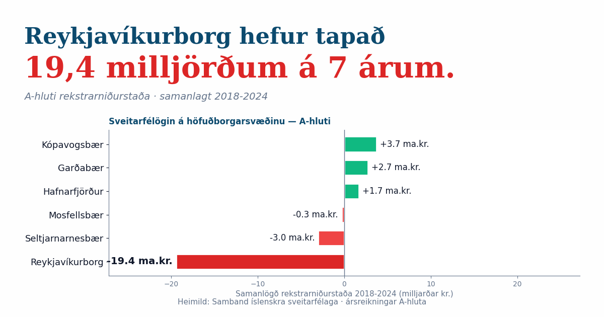

Greiningar og mælaborð á opnum gögnum frá Reykjavíkurborg, Hagstofu Íslands, Sambandi íslenskra sveitarfélaga og Gagnagátt Reykjavíkur.
A-hluti rekstrarniðurstaða Reykjavíkurborgar 2018–2024 — sex sinnum verri en næsta sveitarfélag á höfuðborgarsvæðinu. Bein úr ársreikningunum, engin meðaltöl.
Skoða greininguna →